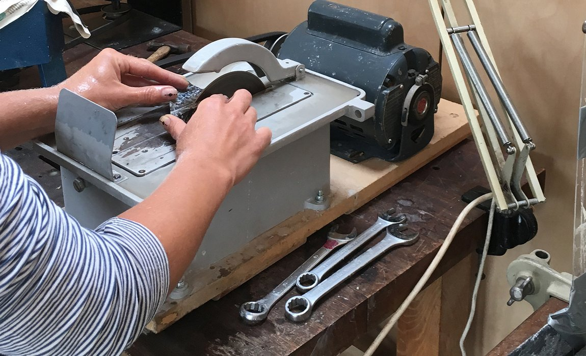

The true artistry of lapidary comes to life in the shaping process. After the initial cutting, shaping is where the rough stone truly begins its transformation into a polished gem, a captivating cabochon, or a unique sculpture. Whether you're creating cabochons, faceted stones, or intricate carvings, mastering shaping techniques is essential for any lapidary enthusiast. This guide dives deep into the techniques, tools, and artistic considerations in shaping stones for your lapidary creations.
Types of Shaping in Lapidary
Shaping for Cabochons
Cabochons, with their smooth domed tops and flat bottoms, are a cornerstone of lapidary jewelry. Shaping a cabochon involves several key steps:
- Preforming: Start with a slab or rough piece that has been cut to the approximate size and shape of your desired cabochon.
- Grinding: Use a coarse-grit diamond wheel on a grinder to shape the stone's outline and remove excess material. Gradually refine the shape using progressively finer grits.
- Sanding: Switch to wet sanding with silicon carbide sandpaper to smooth out any scratches or imperfections left by the grinder. Again, work your way through progressively finer grits until the surface is smooth and even.
- Creating the Dome: Use a domed sanding wheel or a handheld cabbing unit to grind and sand the top of the cabochon into a smooth, rounded dome shape.
- Forming the Girdle: Carefully grind and sand the outer edge of the cabochon to create a consistent, polished girdle.
Shaping for Faceting
Faceting is a precise art that involves cutting and polishing a series of flat faces (facets) onto a gemstone to enhance its brilliance and fire. Here's the basic process:
- Preforming: The rough stone is shaped into a preform, usually a round or oval shape, that will fit into the faceting machine.
- Faceting: The preform is placed in a faceting machine, which allows for precise control of the angles and placement of each facet. The stone is cut and polished facet by facet, following a specific pattern.
- Types of Facet Cuts: Common facet cuts include the brilliant-cut (round with multiple facets), step cut (rectangular or square with parallel facets), and mixed-cut (combining elements of both).
Shaping for Carving and Sculpting
Carving and sculpting allow for a greater degree of artistic expression in lapidary. Artists use various tools to shape stones into intricate figures, abstract forms, or decorative objects.
- Tools: Common carving tools include diamond burs, rotary tools (like a Dremel), hand carving tools (chisels, hammers), and rasps.
- Techniques: Carving techniques vary depending on the desired outcome. Relief carving creates raised images, while intaglio carving involves carving into the surface of the stone. Freeform carving allows for more organic and expressive forms.
Shaping Tools and Equipment
Lapidary artists utilize a wide range of tools for shaping:
- Grinders and Sanding Wheels: These machines come with interchangeable wheels of varying grits and materials, such as diamond, silicon carbide, and ceramic.
- Dremels and Rotary Tools: Rotary tools are highly versatile, allowing for detailed and intricate work. Various attachments, such as diamond burrs and sanding drums, can be used for different shaping tasks.
- Hand Tools: Rasps, rifflers, and other hand tools are used for fine shaping, detailing, and creating textures.
- Carving Tools: This includes chisels, rotary tools, and specialized carving knives. The right tools make a significant difference in the quality and precision of your carvings.
Step-by-Step Shaping Process
1. Preparing the Stone
- Cleaning and Inspecting: Clean the stone thoroughly and inspect it for any cracks or inclusions.
- Marking and Planning Shapes: Use a wax pencil to outline the desired shape on the stone.
2. Setting Up Your Equipment
- Safety Checks and Setup: Ensure all equipment is in good working order and set up according to safety guidelines.
- Adjusting Machine Settings: Adjust the speed and settings of your tools to suit the stone type and desired shaping.
3. Shaping Techniques
- Techniques for Precision Shaping: Use steady, controlled movements to achieve the desired shape. Work slowly and methodically.
- Handling Different Stone Types: Different stones require different techniques. Softer stones need gentler handling, while harder stones can withstand more pressure.
4. Post-Shaping Processing
- Cleaning and Inspecting the Shaped Stone: Remove any debris and inspect the stone for smoothness and accuracy.
- Addressing Any Imperfections: Use finer tools to correct minor flaws and achieve a perfect shape.
Techniques and Best Practices
Shaping Techniques
- Grinding: Using a grinder with a coarse grit wheel, remove excess material and establish the basic shape of your stone.
- Sanding: Progress through increasingly finer grits of sandpaper or sanding wheels to smooth out rough surfaces and refine the shape.
- Polishing: After shaping, polishing brings out the final luster and shine of the stone. Use a polishing compound on a felt or leather wheel to achieve a high gloss.
- Basic Techniques for Beginners: Start with simple shapes and gradually progress to more complex designs.
- Advanced Techniques for Experienced Lapidarists: Experiment with intricate cuts and multi-step shaping processes.
Maintaining Your Equipment
- Regular Maintenance Routines: Clean and lubricate your tools regularly to extend their lifespan.
- Troubleshooting Common Issues: Learn to identify and fix problems like uneven shaping or tool wear.
Safety Precautions
- Personal Protective Equipment (PPE): Always wear safety glasses, gloves, and a dust mask to protect yourself.
- Safe Handling of Tools and Materials: Follow proper procedures to avoid accidents and injuries.
- Eye and Lung Protection: Always wear safety glasses and a dust mask when shaping stones.
- Tool Safety: Follow manufacturer instructions for all tools and equipment.
- Secure Your Work: Ensure your workpiece is securely clamped or held to prevent accidents.
Tips and Tricks for Successful Shaping
- Start Simple: Begin with softer stones like soapstone or alabaster to practice your technique.
- Use Templates: If you're making cabochons or faceted stones, templates can help you achieve consistent shapes and sizes.
- Patience is Key: Take your time and work slowly. Rushing can lead to mistakes and wasted material.
- Sharp Tools: Keep your tools sharp for cleaner cuts and easier shaping.
- Lubrication: Use water or a lubricant to reduce friction and heat while grinding and sanding.
Troubleshooting Common Shaping Issues
Chipping and Cracking
- Causes and Prevention: Understand why these issues occur and how to prevent them.
- Repair Techniques: Learn methods to fix minor damages and salvage your work.
Tool Wear and Tear
- Signs of Wear: Identify when tools need replacement or maintenance.
- How to Replace and Maintain Tools: Step-by-step instructions for tool care.
By understanding the various shaping techniques and utilizing the right tools, you can transform rough stones into stunning works of lapidary art. Embrace the creative process and let your imagination guide your hand. Remember to prioritize safety, maintain your tools, and keep experimenting with different techniques. Happy shaping!